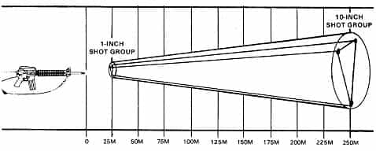
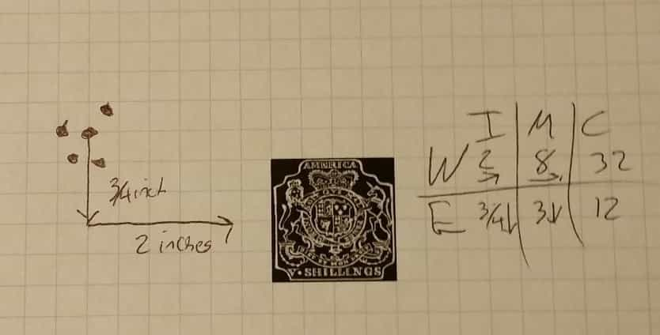

Luke Stranahan is an engineer by trade and an armed patriot by inclination. He writes for Return of Kings as a leisure pursuit and an attempt to do his part to help reverse the slide into moral decrepitude of modern society. Follow him on Twitter.


In previous articles, we discussed the steps in firing a shot, with both proper sight picture and trigger control. Good shot control will result in small, tight groups of holes on your target, but what if those groups are not centered on your bulls eye? Instead of randomly dialing in correction to your sights and then chasing subsequent shots across your target, in today’s column we’ll discuss the correct and fast way to efficiently adjust your sights to put your group of shots exactly where it should be.
There are three elements involved in shooting besides you yourself, and those are your sights, your gun, and the target. These all speak different languages, to make a poor analogy, and you need to be able to translate between the three. On your target, the distance away from the center of the group to the center of the target is measured in distance, which is typically inches or centimeters. Your gun shoots a pattern of shots that disperse into an ever-increasing angular spread as your distance from the target increases, and that is measured in minutes or mils. Finally, your sights increment in measured amounts called clicks because of the tactile and audible click the detents make as you move them.
Use a grid like this or similar.
If you use the standard measurement system, this results in a system called IMC (Inches, Minutes, and Clicks.) Metric is also done the same way, just with centimeters, mils, and clicks. Coupled with Windage and Elevation (left/right, and up/down, respectively), you can formulaically compute and log your corrections needed to your sights and only have to make one adjustment to get your next group on target.
You may have heard the phrase “It’s a sub-moa rifle,” and maybe wondered what that meant. MOA, in addition to being a dead bird in New Zealand and a shopping mall in Minnesota, is an acronym used in the shooting sports as Minutes of Angle. Angles are measured in degrees or radians, and, as any trigonometry student that ever put their scientific calculator into the wrong mode knows, they both accomplish the same thing, but go about it in different ways. MOA uses the degree system, and milliradians, abbreviated to mils, uses the radian method.

Ideally, each shot from a rifle aimed at the same point would hit that same point. In reality, even when we clamp down the rifle to avoid shooter error, and use the best ammo to avoid those errors too, the bullets coming out the barrel will angularly deflect off the true flight path a certain amount, and this will result in a small group on a close up target, and a large group on a far away target, as the bullet has more time to spread out from a perfect shot because of a longer flight.
We must measure this, then, in angles. 360 degrees in a circle, using just one degree over a distance of one hundred yards yields us a spread on the paper of 62.83 inches, if I get my trig right, which is an unusable measurement, as it is not precise enough. However, 1/60th of that angle would be a usable 1.047 inch spread on the paper at 100 yards. Just like a minute is 1/60th of an hour, a minute of angle is 1/60th of a degree of angle.
Radians, of which there are 2π in a circle, are also too big, so milliradians, of which there are 6283 in a circle are used instead. The angular “mil” used in shooting is 1/6400 of a circle, so 1 mil = 3.85 inches at 100 meters, or 9.78 centimeters. Typically, 1/10th mil is used as an increment, so you end with the very useful 1/10th mil = 1 cm at 100 meters, and 1 MOA = 1 inch at 100 yards.
Some say you deal with less digits with mils, and some say MOA is easier to conceptualize; use whichever works.
We’re going to use MOA for the rest of the article, as I know it better. So, if a MOA is 1 inch at 100 yards, someone saying a gun is a sub MOA gun means that it shoots a group into a target at 100 yards that is smaller than an inch apart. Cool.
Now, angular measurements increase and decrease with distance. A minute of angle is worth 1 inch at 100 yards, but it’s worth two inches at two hundred yards, and four inches at four hundred yards. It’s also worth 1/4 inch at 25 yards. So, our sub-MOA gun will shoot a group a quarter inch apart at 25 yards, and 4 inches apart at 400 yards.

The important take-away for this particular discussion is not that group size increases as distance increases (although that’s useful), it’s that the distance from the center of your target that your group is will ALSO increase with distance along the same lines. You cannot say “I want to move my sights to move the group 2 inches on the target” because the amount of correction your sights will need varies on how far away that target that is two inches off is. You have to think angularly, not linearly. As we talk about targets, this will become clear.
You’ll have a group on paper that will, on a not-sighted in rifle, not be on the center of the target. People get very confused at this point about how to articulate what to do. Is “the bullet left and high” or “I need to go right and low”?
The best thing to do is speak in terms of what you need to do, and write it down, with the direction. Write “Up 2 inches and Right 1/2 inch” and, that way, you’ll always know that you need to move it that way.
This guy wrote what his shots did, and not what he needs to do, but he did circle it and measure from the center and write on the target, all of which is important.
However, here is the critical part from the takeaway of MOA. Know that the amount of correction depends on the amount of MOA you are off, not the inches you are off. A gun that is 1 inch off to the left at 100 yards requires the same 1 MOA adjustment to the right that a gun is off 2 inches to the left at 200 yards will require. More relevantly, since you should be sighting in at a close distance, like 25 yards, that same gun with the same problem will be 1/4 inch to the left at 100 yards and require the SAME ONE MOA correction to the right.
Before you head back to the firing line, write down the MOA you need to go, and what direction, for both windage and elevation.
Ok, so the target speaks inches, the gun shoots in MOA, and the sights adjust in clicks. How do we convert clicks to the MOA data I just brought back from the firing line?
Adjustable sights increment in clicks, and that click is worth some fraction of a MOA, or a mil. Scopes also click in those increments. If you are running good iron sights, like on an M1 Garand or a Springfield M1A, the elevation and windage is in 1 MOA per click amounts (although to zero them horizontally you should be sliding the front sight on its dovetail.) TechSights, a popular shooting sight upgrade company, usually get you 1/2 MOA per click. Scopes are usually 1/4 MOA per click, although they may say “4 clicks = 1 inch at 100 yards” on the dial, but that’s the same thing as 1/4 MOA per click, as a MOA is 1 inch at 100 yards, remember.
Non-zeroable scope dial. Note the text about what the clicks do.
The upshot of all this is you need to know how much movement the sights on your gun do per click. That’s assuming they even click in the first place. If you have more rudimentary sights on your carry pistol that are “drift adjustable,” that means you beat them with a brass punch or a sight drifter bit by bit to get them right. A lot of stock rifle sights leave a lot to be desired, as well, and the two best things you can do to a rifle are upgrade the sights, and put on a good sling. TechSights are good iron sights, and slings will be the subject of a future article.
Tech Sights. Adjustable (but not zeroable) for windage and elevation in the rear, and elevation in the front.
Remember to go the right way in your sight adjustments. Scopes will often have an arrow pointing one way around the dial with a U or an R or something meaning “go this way for up.” This corresponds with the same data you took earlier that always means “I need to go this way.”
Iron sights are a mixed bag. Some front sights can be windage adjustable, some are elevation adjustable. Most rear sights are elevation adjustable, and some are windage adjustable. The idea to remember with irons is the acronym FORS, or Forward Opposite, Reverse Same. Or remember that your rear sight is closer to you, and is your buddy, and will work with you; whereas your front sight is far away, your enemy, and works against you.
Either way, your rear sight moves in the same direction you want the impact to go. If the bullet is hitting low and left, you will want to go up and right. Adjusting your rear sight up and right will do that for you. Also, adjusting your front sight the opposite, low and left, will also do the same for you.

The M1A and Garand have the same sights. Note how the front sight is driftable on the dovetail slider; this lets you sight it in with the back sight zeroed for windage.
Before we put it all together, let’s talk zeroing versus sighting in. Sighting in simply means that your gun sights are set to put a bullet on the bulls eye at the distance you are currently away from the target. That’s all it means, and most pistol sights and cheap iron rifle sights, and most scopes are that way. Most hunters will set their scopes on their rifles to be “on at 50 and 200,” which means that the gun is sighted in at 50, will be a little high at 100 yards, and back on target as the bullet drops at 200 yards, then drop off as range increases.

Note how the windage (left/right) is at mechanical zero (centered) on this Garand. It’s backed all the way down elevation-wise as 7 or 8 clicks up would get you about to the line below the 2 on the left dial for 100 yards, so it’s probably zeroed elevation wise as well.
Zeroing is more advanced, and is used by people who want their sights on target at multiple distances. This becomes important in long range shooting, and is something we’ll go in depth into in a ballistics article, but the idea is that, not only is the gun sighted in at the distance you are shooting, but the dials on the scope turrets or iron sight adjustment knobs are set relative to the sight adjustment themselves so that the range on the dials, or the MOA on the turrets, matches the distance you are shooting, or the amount of correction you want to add, respectively. This is so you can crank the sights on the fly to the distance you want, aim center mass, and hit shit, as opposed to having to add Kentucky Windage and aim a foot above a target that is a long way off.
Zeroable scope turret. Sight it in, then loosen the set screw and move the dials to 0 and 0, hence “zeroed” at that range. If zeroed at 100 yards, cranking the top dial to “2” would add 2MOA, which is usually right for 200 yards.
Let’s make a hypothetical example to put it together. We’re shooting 25 yards at a target made on quarter inch graph paper (which is really useful for this exercise.) The center of our group is 3/4 of an inch high, and is 2 inches to the left of the center of the target.

We write down “go down 3/4 inch and right 2 inches.” We then remember that, at 25 yards, a MOA is worth 1/4 inch, so we do some math, and realize we need to “go down 3 MOA, and right 8 MOA.”
We go back to our rifle, and read on our scope “1 click = 1/4 inch at 100 yards” and realize we have a scope that does 1 click for every 1/4 MOA, so we need to multiple our MOA by 4 clicks per MOA to get our number of clicks. This means we need to put in 12 clicks down to get 3 MOA down, and 32 clicks right to get 8 MOA right. Ideally, our next shots will be right on target, but, if not, we will go downrange, get more data, and do more correction. This idea of shoot, get data, then correct and shoot again is often called the Rifleman’s Dance, and doing it precisely will save you time and money.
This is the third article in a series on basic shooting and sighting in guns, mainly rifles. Once you know how to shoot well, and have sighted in your rifle at one distance, you can adjust your sights or how much you “hold over” (aim above) the target to score hits at longer ranges. We’ll get to an article on ballistics soon. Until then, be safe.
Read More: How To Properly Fire A Gun